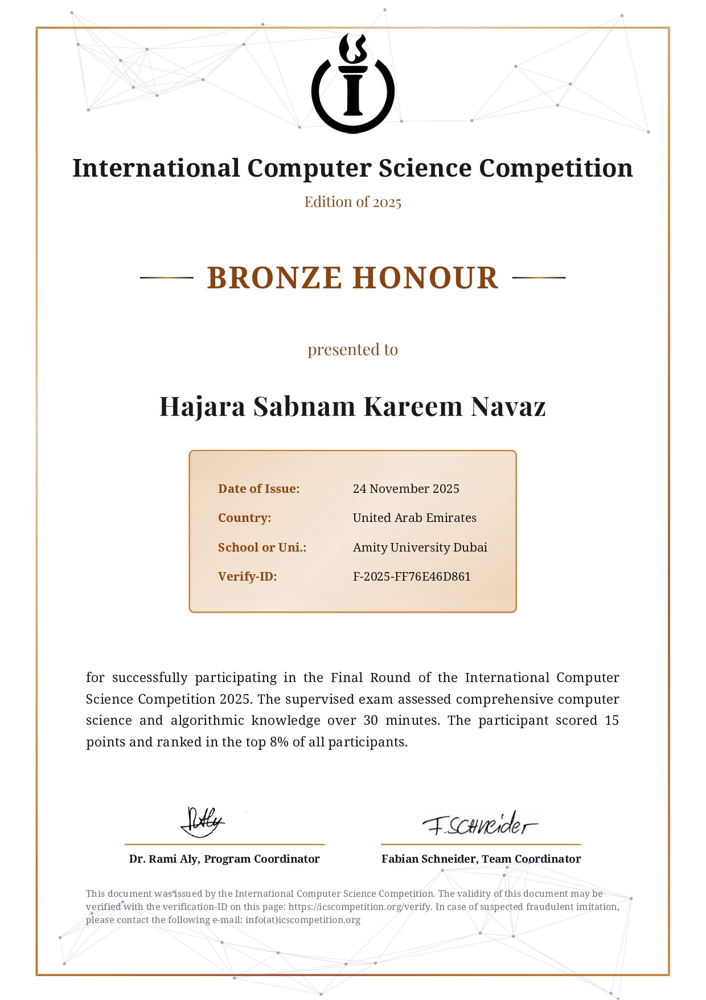

The International Computer Science Competition (ICSC) 2025 was a global, multi-round competition
designed to assess core computer science knowledge and problem-solving skills. The competition consisted of
three stages, a qualification round, pre-final, and final round covering topics such as neural networks, logic,
object-oriented programming, and Python programming.
I qualified through all rounds and reached the final stage, where I ranked among the top 8% of
participants worldwide, earning the Bronze Honor Award. This experience strengthened my theoretical foundations
and reinforced my interest in competitive problem-solving and applied computer science.
Hajara Sabnam

Bronze Honour in the International Computer Science Competition 2025
